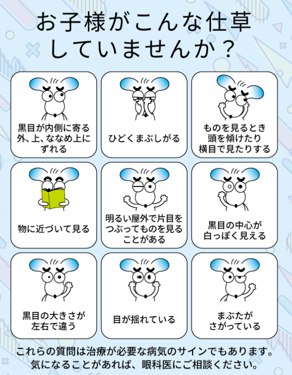

👀 弱視クイズ 👀
スタッフ向け - 保護者への説明力UP！
👀 弱視クイズ
❌ 間違えた問題:
0問
🆕 未挑戦の問題:
15問
✅ 正解した問題:
0問
📊 全問題数:
15問
今日の3問: 間違い・未挑戦を優先出題
全問モード: 全15問を順番に出題
全問モード: 全15問を順番に出題
問題 1 / 15
正解: 0
問題 1
弱視とは、医学的にどのような状態を指しますか？
メガネをかけても視力が出ない状態
裸眼視力が0.1以下の状態
目の筋肉がとても弱い状態
片目だけが近視の状態
解説：弱視は単なる視力低下ではなく、メガネやコンタクトで矯正しても視力が出ない状態です。原因は目の病気だけでなく、視覚情報を処理する脳の発達が途中で止まってしまうことにあります。
問題 2
弱視の主な原因として、適切「でない」ものはどれですか？
強い遠視や乱視
斜視
テレビやゲームのやりすぎ
左右の度の著しい差（不同視）
解説：弱視の主な原因は、強い屈折異常（遠視・乱視）、斜視、不同視、先天白内障などです。テレビやゲームは近視の環境要因にはなりますが、弱視の直接的な原因ではありません。
問題 3
弱視の治療において、なぜ早期発見が非常に重要なのでしょうか？
視覚の発達にはタイムリミットがあるから
治療費が高額になるから
治療が痛みを伴うようになるから
斜視がひどくなるから
解説：視覚機能が発達する感受性期は、生後1か月から始まり、8歳頃にほぼ完成します。この期間を過ぎてから治療を始めても、十分な効果が得られない可能性があります。そのため、3歳児健診などでの早期発見が極めて重要です。
 弱視の早期発見：治療にはタイムリミットがあり、3〜4歳なら再スタートできます
弱視の早期発見：治療にはタイムリミットがあり、3〜4歳なら再スタートできます
弱視の早期発見：治療にはタイムリミットがあり、3〜4歳なら再スタートできます
問題 4
弱視の治療の第一歩として、まず何を行うべきですか？
目の筋肉を鍛えるトレーニング
アイパッチで良い方の目を隠す
正確な度数のメガネを常用すること
ビタミン剤を内服する
解説：弱視治療の基本かつ最も重要な第一歩は、屈折異常を正確に矯正するメガネを常に装用することです。これにより、網膜に鮮明な像を結ばせ、脳に正しい視覚情報を送るための土台ができます。
問題 5
アイパッチなどを使って良い方の目を隠す「健眼遮蔽」の目的は何ですか？
良い方の目を休ませるため
弱視の目を強制的に使わせるため
両目のバランスを整えるため
斜視の角度を矯正するため
解説：健眼遮蔽（アイパッチ訓練）は、あえて良い方の目を隠すことで、普段使われていない弱視の目を強制的に使わせ、脳の視覚野の発達を促すための積極的な治療法です。
保護者への声かけポイント：「お子様にとっては大変な訓練ですが、頑張った分だけ見る力が育ちます。一緒に応援しましょう」と、治療の重要性を伝え、協力と励ましの姿勢を示すことが大切です。
問題 6
保護者から「うちの子は、片目を隠しても嫌がらないので弱視ではないですよね？」と聞かれました。適切な答えはどれですか？
「そうですね、嫌がらないなら大丈夫でしょう」
「嫌がらなくても、強い遠視など両眼性の弱視の可能性はあります」
「それは斜視の兆候かもしれません」
「乱視が強いのかもしれませんね」
解説：片目を隠して嫌がるのは、隠した方の目が「良い方の目」である場合です。しかし、両眼とも強い遠視などで視界がぼやけている「両眼の 屈折異常弱視」の場合、どちらの目を隠しても見えにくさは変わらないため、子どもは嫌がらないことがあります。
問題 7
最も緊急性の高い治療が必要な弱視の原因は何ですか？
斜視
強い遠視
先天白内障
不同視
解説：生まれたときから水晶体が濁っている「先天白内障」など、物理的に光が遮られることで起こる「形態覚遮断弱視」は、視覚の発達に最も深刻な影響を与えます。発見次第、可及的速やかな紹介・手術・治療が必要です。
問題 8
3歳児健診の視力検査で「要精密検査」となった場合、保護者にどう伝えるべきですか？
「すぐにメガネが必要になります」と断定する
「弱視などを早期発見する大切な機会なので、ぜひ精密検査をしましょう」と促す
「ほとんどの場合、問題ないので様子を見てください」と安心させる
「再検査は、小学校に上がってからで大丈夫です」と伝える
解説：3歳児健診は、弱視を治療感受性の高い時期に発見するための非常に重要な機会です。「要精密検査」は、治療が必要な病気を見つけるためのサインかもしれません。必ず眼科専門医の診察を受けるよう、強く推奨することが重要です。
3歳児健診で弱視の有無を検査しましょう！
3歳児健診で弱視の有無を検査しましょう！

お子様がこんな仕草をしていませんか？気になることがあれば眼科へ
問題 9
弱視治療用のメガネをかけた子どもの保護者から「友達にからかわれないか心配」と相談されました。どのような声かけが考えられますか？
治療の重要性を伝え、本人が好きなフレームを選べるよう提案する
「気にしないのが一番です」とだけ伝える
コンタクトレンズへの変更を勧める
園・学校にいる間だけ外すことを許可する
解説：保護者の不安に共感しつつ、治療用メガネは視力の発達に不可欠であることを丁寧に説明します。その上で、お子様自身が気に入ったフレームを選ぶことで、メガネへの愛着がわき、前向きに治療に取り組めるようサポートする姿勢が大切です。
問題 10
弱視治療が順調に進んだ場合、どのような状態になるのがゴールですか？
メガネなしで1.0見えるようになる
左右の視力が 同じになる
メガネやコンタクトを使用して、良い視力(1.0)が 見える
斜視が完全になくなる
解説：弱視治療のゴールは、裸眼視力を上げることではなく、「メガネやコンタクトレンズといった適切な矯正手段を用いることで、良好な視力を引き出せる目（脳）に育てること」です。治療後もメガネが必要な場合は多々あります。
問題 11
3歳児健診での視力検査が特に重要なのはなぜですか？
3歳が初めてひらがなを覚える年齢だから
視覚の感受性期（発達しやすい時期）にあたるから
この年齢からしか正確な検査ができないから
3歳までにほとんどの弱視が自然治癒するから
解説：視力の発達は8歳頃に完成しますが、特に感受性が高いのは３−５歳頃までと言われています。この時期に治療を開始することが、高い治療効果を得る鍵となります。
問題 12
弱視治療でメガネをかける最大の目的は何ですか？
かけた瞬間に視力を1.0にすること
網膜にピントの合った像を送り、脳の発達を促すこと
目の筋肉をリラックスさせること
眼を 物理的に 保護するため
解説：治療用メガネは、まず網膜にクッキリとした映像を届けることが目的です。その映像刺激によって、脳の「見る力」を育てていきます。すぐに視力が上がるわけではないことを伝えることが重要です。
問題 13
お子様の見た目について、弱視を「見逃しやすい」のはどのような場合ですか？
いつも目を細めている
明らかに片目が寄っている（斜視）
見た目には全く異常がない
テレビに近づいて見る
解説：斜視のように見た目でわかる弱視もありますが、強い遠視などが原因の弱視は、見た目では全くわかりません。そのため、お子様に特に変わった様子がなくても、検診で異常を指摘された場合は必ず受診することが重要です。
問題 14
弱視の治療は、一般的にいつ頃まで続ける必要がありますか？
矯正視力が1.0になった時まで
矯正視力が1.2になるまで
視力の発達が安定する8歳〜10歳頃まで
小学校入学まで
解説：弱視治療は、視力の発達が安定する8歳から10歳頃まで、定期的な検査・観察が必要です。視力が一度良くなっても、メガネ中断で再発することがあります。メガネの装用をやめないことが大切です。
問題 15
子どもが弱視治療用のメガネを「嫌がる」場合、どのように対応するのが望ましいですか？
無理やり かけさせる
褒めたり、ご褒美をあげたりして、かける意欲を 引き出す
テレビの時間だけ かけさせる
慣れるまで メガネなしで 過ごさせる
解説：メガネをかけることが 治療の第一歩です。嫌がるお子様の気持ちに 寄り添いながらも、「メガネをかけられたらシールを貼る」など、楽しく続けられる工夫を 保護者の方と一緒に 考える姿勢が大切です。メガネをかけることが ポジティブな行為だと 認識してもらうことが 重要です。